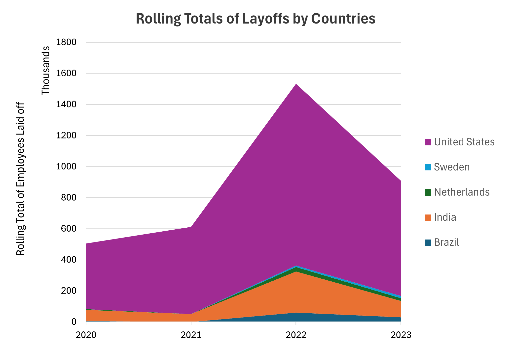
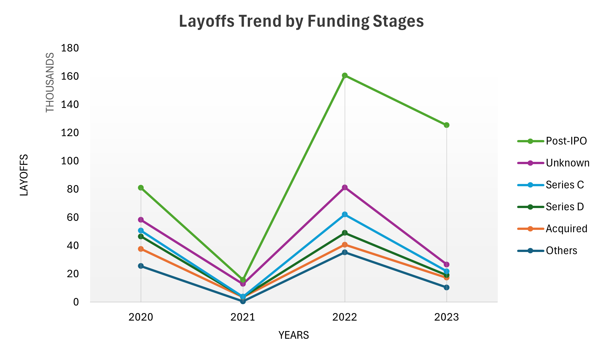
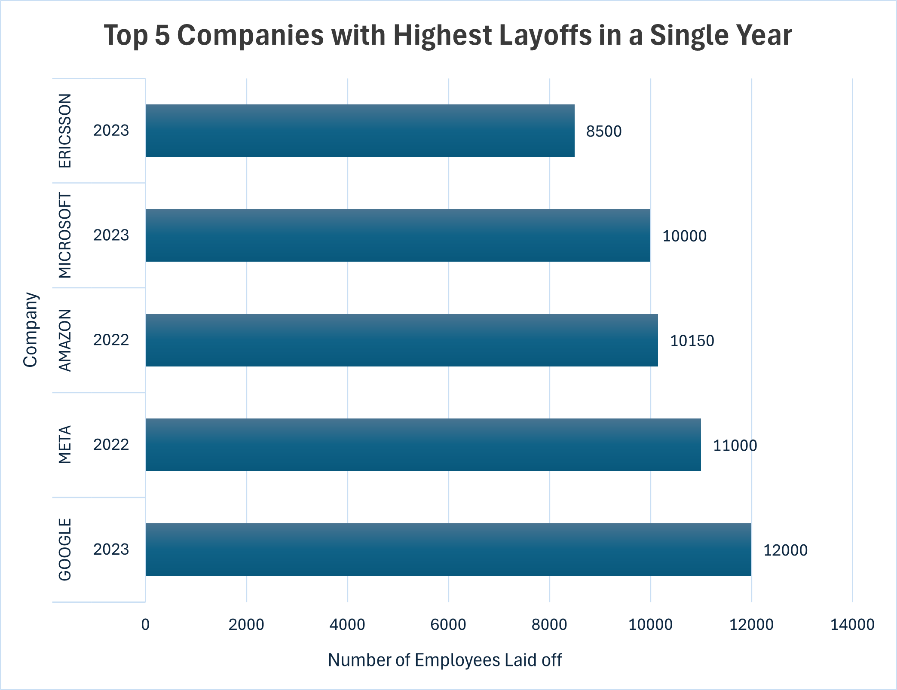
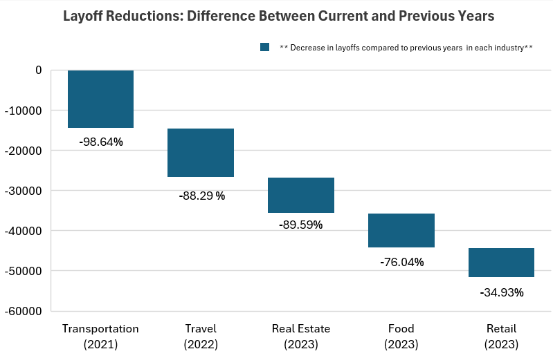

Analyzing Global Tech Layoffs
Which companies, countries & industries were hit hardest - and is the tech sector recovering?

The Bottom Line
Between 2020 and 2023, the global tech industry laid off over 383,000 people - not evenly, and not randomly. Using SQL, I cleaned a raw layoffs dataset and ran exploratory analysis to find out exactly which companies, industries, funding stages, and countries were responsible. The answer: a handful of Post-IPO giants in the U.S. drove the majority of the damage, peaking in 2022 - while sectors like Transportation had already recovered by 2021. This project shows I can take messy real-world data, clean it rigorously, and extract a clear story from it using SQL alone.
Key Findings at a Glance
Project Overview
The tech industry experienced an unprecedented wave of workforce reductions between 2020 and 2023 - driven by pandemic-era overexpansion, rising interest rates, and post-IPO market corrections. This project uses SQL to clean and analyze a global layoffs dataset, answering four business-oriented questions:
- Which companies and industries were most affected, and by how much?
- Did layoffs increase or decrease year over year - and is there a recovery signal?
- Which funding stages are tied to the highest layoff volumes?
- Which countries bore the most cumulative workforce impact?
The Dataset
The dataset contains global tech layoff records from March 2020 onward, sourced from public layoff tracking data. Each record includes company name, industry, country, date of layoff event, number of employees laid off, percentage of workforce laid off, and company funding stage. The raw data contained duplicates, inconsistent text formatting, mixed date formats, and missing values - all addressed during the cleaning phase before any analysis was run.
Methodology
1. Data Cleaning
Before any analysis could run, the raw dataset needed significant preparation. All cleaning was done in SQL using a staging table approach - keeping the original data intact while working on a clean copy.
- Removed duplicates using
ROW_NUMBER() OVER(PARTITION BY)on all identifying columns - a simple DELETE would have missed compound duplicates that shared only some fields. - Standardized text fields - trimmed whitespace from the
companycolumn, corrected inconsistent entries inindustry(e.g. "Crypto" and "CryptoCurrency" unified) andstagecolumns. Without this, aggregations by industry would silently undercount affected companies. - Converted date format from text (
MM/DD/YYYY) to proper SQLDATEtype - required for all time-series analysis including year grouping, month extraction, and rolling totals. - Handled nulls deliberately - rows where both
total_laid_offandpercentage_laid_offwere null were removed, as they carried no analytical value. Other nulls were left in place to avoid distorting averages. - Dropped staging columns after cleaning to keep the working table lean for query performance.
2. Exploratory Data Analysis (EDA)
With clean data in place, SQL was used to systematically answer each business question - moving from simple aggregations to advanced window functions as the analysis deepened.
Layoff Scale & Complete Shutdowns
Queried for maximum single-event layoffs and identified companies that laid off 100% of their workforce - indicating full shutdowns rather than downsizing. This distinction matters: a company cutting 10% is cost-managing; a company cutting 100% has collapsed entirely.
Finding: Multiple companies across Consumer and Retail sectors fully shut down during 2020–2022, concentrated in early-stage funding rounds where cash reserves were thinnest.
Industry & Country Aggregations
Grouped layoffs by industry and country using SUM() and GROUP BY to identify where the damage was concentrated. Consumer and Retail emerged as the most impacted industries. The United States accounted for a disproportionate share of global layoffs - driven by its concentration of large tech employers and aggressive pandemic-era hiring.
Finding: The U.S. accounted for the vast majority of global layoffs, with India a distant second. This is not just because the U.S. has more tech companies - it reflects how aggressively U.S. firms overhired during 2020–2021.
Year-over-Year Trend Analysis
Grouped data by year to detect whether layoffs were accelerating or decelerating. Used YEAR() extraction and annual aggregation to build a timeline view.
Finding: Layoffs spiked sharply in 2022 - not 2020, as most people assume. The COVID year (2020) triggered layoffs, but the real correction came later as overvalued tech companies adjusted to rising interest rates and slowing growth. 2023 remained elevated, suggesting the correction was prolonged rather than sudden.
Rolling Totals by Country - Window Functions
Used SUM() OVER(PARTITION BY country ORDER BY month) to compute cumulative layoffs over time per country. This reveals momentum - how fast each country's total was growing - rather than just the end figure.
Finding: The U.S. cumulative total reached approximately 1.5 million by end of 2022 before tapering into 2023 - by far the largest of any country. India, Brazil, Netherlands, and Sweden combined barely registered on the same scale, their curves remaining nearly flat throughout the entire period. The gap isn't just large - it's a different order of magnitude entirely.
Top 5 Companies per Year - DENSE_RANK()
Applied DENSE_RANK() OVER(PARTITION BY year ORDER BY total_laid_off DESC) to extract the top 5 companies by layoff volume for each year independently. This is more analytically honest than a simple top-5 all-time list, which would be dominated by 2022–2023 data.
Finding: Google, Meta, Amazon, Microsoft, and Ericsson dominated 2022–2023. Google's 12,000-person cut in 2023 was the single largest event in the dataset - from a company that had been publicly profitable throughout the period.
Year-over-Year Recovery Detection - LAG()
Used LAG() to compare each industry's layoff total against the previous year, then ranked industries by the magnitude of their decrease. This identifies genuine recovery signals rather than just low absolute numbers.
Finding: Transportation saw a 98.6% reduction in layoffs from 2020 to 2021 - the fastest recovery of any industry. Travel and Real Estate followed. These are the sectors where pent-up post-lockdown demand absorbed displaced workers most quickly.
Summary
TOOLS
SQL (MySQL)
OBJECTIVE
To transform raw layoff data into insights through SQL-based cleaning and analysis.
KEY SKILLS
Data Cleaning | Window Functions | Aggregates with OVER() | CTEs | Rolling Metrics | Partitioning & Ordering
Results
Four analyses answered the core business questions. Each finding is presented with the SQL technique used and what the result means in practice.
1. Layoffs Trend by Funding Stage
SQL used: CTEs, GROUP BY, grouped aggregations by funding stage and year.
Finding: Layoffs spiked sharply in 2022 across nearly all funding stages. Post-IPO companies were by far the most affected - laying off over 160,000 employees in 2022 alone, far exceeding any other category. Despite a slight decline in 2023, Post-IPO remained the most impacted stage, indicating prolonged instability in public markets.
Interpretation: Companies that had recently gone public faced immediate pressure from investors to cut costs as growth slowed and interest rates rose. The overexpansion of 2020–2021 left Post-IPO firms the most exposed when market conditions tightened.

2. Top 5 Companies with Highest Layoffs per Year
SQL used: DENSE_RANK() OVER(PARTITION BY year ORDER BY total_laid_off DESC) inside a CTE, filtered to rank ≤ 5.
Finding: Google, Meta, Amazon, Microsoft, and Ericsson dominated the 2022–2023 rankings. Google laid off 12,000 employees in 2023 - the single highest company layoff in the dataset - despite reporting profits throughout the period.
Interpretation: The concentration of cuts among publicly profitable firms signals that these were strategic workforce resets, not financial emergencies. These companies used the broader market correction as cover to trim headcount they had added opportunistically during the pandemic boom.

3. Top Countries by Cumulative Rolling Layoffs
SQL used: SUM() OVER(PARTITION BY country ORDER BY month) to build rolling totals, joined with country aggregates via CTE.
Finding: The U.S. cumulative rolling total reached approximately 1.5 million layoffs by end of 2022 - dwarfing every other country. India, Brazil, Netherlands, and Sweden combined barely registered on the same scale. The U.S. total peaked in 2022 and began declining into 2023, while other countries remained relatively flat throughout.
Interpretation: The U.S. dominance reflects both scale and hiring behaviour - American tech firms hired far more aggressively during 2020–2021 and faced sharper corrections. India's lower numbers reflect a different employment model, with more contract-based and offshore roles less likely to appear in public layoff announcements.
4. Industries with Largest Year-over-Year Layoff Reductions
SQL used: LAG() window function to compare each industry's yearly total against the prior year, then RANK() to surface the biggest declines.
Finding: Transportation saw a 98.6% reduction in layoffs from 2020 to 2021 - the fastest recovery of any industry. Travel, Real Estate, Food, and Retail followed with reductions exceeding 85%.
Interpretation: These are demand-driven industries that contracted sharply during lockdowns and rebounded as restrictions lifted. The speed of recovery in Transportation suggests the 2020 layoffs were reactive rather than structural - workers were quickly rehired as operations resumed. This contrasts with tech, where 2022–2023 cuts reflect longer-term strategic restructuring.

Limitations & Next Steps
Every dataset has boundaries, and being transparent about them is part of doing analysis honestly.
- Voluntary departures are not captured. This dataset tracks announced layoffs only - not resignations, retirements, or quiet attrition. The net workforce impact at any company is likely different from what the numbers suggest.
- Rehiring is not tracked. A company that laid off 5,000 and rehired 3,000 three months later looks the same as one that did not rehire at all. A more complete analysis would cross-reference hiring data.
- Revenue context is missing. Google laying off 12,000 is a different signal than a Series B startup laying off 200. Normalizing layoff counts against company headcount or revenue would make comparisons more meaningful.
- Natural next step: Connect this SQL analysis to a Tableau or Power BI dashboard for interactive exploration by industry, country, and funding stage - making it accessible to non-SQL audiences.
Explore the Project
View the full SQL scripts for both data cleaning and exploratory analysis on GitHub.